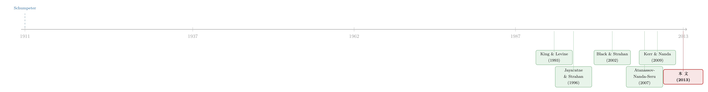

银行能不能「养」出创新？——一场跨州放开的自然实验
本文读的是 Amore, Schneider & Žaldokas (2013, JFE)：利用 1980–1990 年代美国各州「错峰」推行的跨州银行放松管制，作者发现银行业的发展显著提高了制造业上市公司的专利数量（+12.6%）与质量（引用 +10.1%），而这背后真正的引擎，是放松管制后银行得以在地理上分散信用风险、从而更愿意为「九死一生」的创新项目放贷。
1 引言：一个被怀疑了一百年的问题
先抛一个看上去早有定论、其实一直没被讲清楚的问题：银行，到底能不能催生技术创新？
一百年前，熊彼特（Schumpeter, 1911）就把银行家抬到了一个近乎神圣的位置——他说银行家「站在那些想要组建新组合的人，和生产资料的占有者之间」，是「资本家中的资本家」。在熊彼特的叙事里，金融体系不是经济的配角，而是技术进步的发动机。后来 King 和 Levine（1993）用「Schumpeter might be right」做标题，把这条「金融促进增长」的脉络重新点燃。
可是，故事到了银行这里，却突然卡住了。
为什么卡住？因为创新这件事，和银行的「脾性」天生不合。首先，创新的回报极不确定、抵押物又稀薄——一项还没成功的发明，既不能抵押也无法预测现金流，而债务合约（debt contract）偏偏最讨厌不确定性（Stiglitz, 1985；Atanassov, Nanda, and Seru, 2007）。接着，一个更微妙的顾虑是信息泄露：公司若用公开市场的资金去做研发，等于把敏感技术信息摊给了竞争对手（Bhattacharya and Ritter, 1983）。于是，主流文献长期对「银行能给创新型企业带来好处」这件事抱持怀疑——尤其是对上市公司而言。Atanassov, Nanda, and Seru（2007）干脆论证：银行融资对企业的创新活动并不重要。
所以这里有一个真正的张力：理论上银行该是创新的助产士（熊彼特），可债务的属性又让它像是创新的天敌。实证证据也是一团乱麻——有人找到正效应，有人找到负效应。问题出在哪？出在「内生性」。
然后，一个老练的读者立刻会追问：就算我们观察到「银行越发达的地方创新越多」，那又能说明什么呢？也许是经济好的地方既催生了好项目、又自发长出了好银行（Laeven, Levine, and Michalopoulos, 2012 的内生金融发展）；也许是高附加值的项目反过来「召唤」出了高效的金融机构。换句话说，银行与创新之间的相关，可能根本不是银行→创新这个方向。
要打破这个死结，你需要一个「天上掉下来的」银行业发展——它必须与当地企业的创新潜力无关。本文找到的，正是这样一把钥匙。
2 识别策略：把「银行变强」变成一场错峰实验
本文的核心识别，来自 1980–1990 年代美国跨州银行放松管制（interstate banking deregulation）的「错峰」推行。
历史背景是这样的：长期以来，美国银行的地理扩张被一系列法律死死按住——1927 年的 McFadden Act、1956 年 Bank Holding Company Act 的 Douglas 修正案，都不允许银行跨州经营。但从 1978 年缅因（Maine）率先放开开始，各州陆续允许州外的银行控股公司（bank holding company）跨州并购本州银行。1982 年纽约和阿拉斯加跟上，1983、1984、1985……一直到 1990 年代中期，几乎所有州都先后加入。这就形成了一个标准的交错型双重差分（staggered difference-in-differences, DiD）设计：不同州在不同年份「被处理」，已放开的州充当处理组，尚未放开的州充当对照组。
放开之后发生了什么？银行真的跨了州。在平均的州，州外银行控股公司持有的资产份额从 1970 年代中期的 0%，涨到 1990 年代中期的 23%。 用 FDIC 1976–1995 的州级数据，控制了年份与州固定效应后，作者发现跨州放开伴随着净贷款供给上升约 8%。信贷的闸门，确实被拧开了。
这里的处理变量定义得很干净：
$$ \textit{Interstate deregulation}_{jt} = \mathbf{1}\{\text{state } j \text{ has deregulated by year } t\} $$
只要公司总部所在的州 j 在 t 年之前通过了跨州放开，这个虚拟变量就取 1，否则为 0。由于专利数据是非负计数（count data）、且高度右偏（样本里专利数均值约 10、中位数却是 0），普通 OLS 并不合适。作者沿用 Hausman, Hall, and Griliches（1984）的传统，估计一个泊松（Poisson）计数模型，其条件均值设定为：
这个设定的好处在于：η_i 把每家公司「天生擅不擅长创新」这种不可观测的固定差异全部吸走；τ_t 把 1980 年代中期开始的全美专利激增（Hall, 2004）这类共同趋势吸走。在此之上，作者还加了滞后一期的公司控制变量（销售额对数、资本-劳动比对数，后续还加入 R&D 存量、公司年龄、HHI、ROA、有形资产、现金持有），并用三位数 SIC 行业的线性趋势控制行业层面的演化。模型用准极大似然（QMLE）估计——按 Wooldridge（1999），只要条件均值设定正确，即便真实分布不是泊松，估计依然一致。标准误按州（state）聚类，因为处理是在州层面定义的。
DiD 最怕的是「平行趋势」被破坏：会不会是那些本来创新就要起飞的州，恰好更早放开了银行？作者用了好几道防线来堵这个漏洞。第一，放松管制的时序很大程度上是被 1980 年代初的储贷危机（savings and loans crisis）和随后州际互惠协议推着走的，而 Amel（1993）、Goetz, Laeven, and Levine（2012）都指出这些协议的签订并无清晰规律（州并不更倾向于和邻州签约）。第二，放开之前一州的历史专利数，并不显著影响其放开的时点（p 值 = 0.30）。第三——也是最关键的——放松管制在法律真正通过之前，对创新没有显著效应（即不存在「抢跑」的预趋势）。
3 数据：用专利给「创新」称重
怎么量「创新」？本文用成功的专利申请——这是衡量创新产出的经典做法（Griliches, 1990）。具体而言，作者从 NBER 专利数据库出发（Hall, Jaffe, and Trajtenberg, 2001），它收录了美国专利商标局（USPTO）授予的全部专利及其引用关系，再按 Hall, Jaffe, and Trajtenberg（2001）与 Bessen（2009）的方法，和 Compustat 做公司层面的匹配。
几个关键的样本选择值得点明：
- 观测单位：公司-年。关键的地理信息来自公司总部所在州。
- 样本期：1976–1995 年的「申请年」专利。起点早于第一个放开年（1978），终点定在 1995——因为这一年 IBBEA（Riegle-Neal 法案）的跨州银行条款正式生效，再往后就会被全国性放开「污染」。
- 行业：只保留 SIC ≤ 4000 的（主要是制造业），因为专利活动的大头都集中在制造业（Scherer, 1983）。这也顺手剔除了金融、公用事业等受特殊监管的行业，以及主要靠股权和风投而非债务融资的软件业——对软件业，银行-创新这条线本就不太适用。
- 剔除掉账面资产或销售额为负/为零的公司、总部在美国境外的公司，以及资产或销售额年增长超过 100%（往往对应并购、重组）的观测。
最终样本里，专利数均值约 10、中位数为 0；引用统计极度右偏。这种「大量为零、少数极大」的形态，正是要用计数模型而非线性模型的原因。
4 主要结果：不只是更多，而且更好
核心结果只有一句话，但分量很足：跨州放开使企业获得的专利数量上升了 12.6%。
这个数字来自泊松回归。Interstate deregulation 的系数在各列分别为 0.1293（SE 0.0639，5% 显著）、0.1168（0.0472）、0.1169（0.0450，1% 显著）、0.1188（0.0397，1% 显著）——最后一列在加入 HHI、公司年龄、ROA、有形资产、现金持有等一大堆控制后，系数依然稳健。把 exp(0.1188) − 1 算出来，正好约等于 12.6% 的产出增幅。
但作者没有停在「数量」。接着，一个自然的问题是：会不会企业只是为了应付而多申请了一堆「水专利」？ 于是他们去看质量：用未来引用数（forward citations）加权的专利计数，发现专利的重要性上升了 10.1%；进一步地，引用的离散度（dispersion）、专利的原创性（originality）与一般性（generality）也都上升了。这意味着放松管制后，企业不是在灌水，而是采取了更大胆的创新策略——更多、更重要、技术辐射面更广的发明。
然后，效应在哪些企业身上最强？作者发现异质性极为鲜明：
- 对高度依赖外部资本的行业里的企业，效应更大；
- 对更依赖银行债务的企业，效应更大；
- 对放开后 R&D 支出水平高的企业，效应更大。
这三条放在一起，指向同一个机制：放松管制是通过放松那些「银行依赖型」企业的融资约束，来撬动创新的——这与「这是一个供给侧（信贷供给）故事」的解读高度吻合。（关于「信贷供给的松紧如何传导到企业实质决策」这一更广的命题，可参见《钱配错了地方，就成了「全要素生产率」的缺口》与《资本会自己长出来吗？——一部法律如何把风险资本「吸」向大学城》。）
5 真正关键的一步：风险分散，而非「贷款直接拿去做研发」
到这里，故事其实还差最关键的一环。但真正关键的一步在于——为什么放开会让银行更愿意给创新放贷？
一个naive 的猜想是：放开 → 银行多放贷 → 企业拿着贷款直接去做研发。可作者诚实地指出：他们并不能证明这条「直接融资」链条。 创新本身回报太不确定，银行未必会直接把钱借给研发项目。更可能的传导是间接的：企业用放开后更便宜的银行债去做传统投资，从而把更多内部资源腾挪给研发；或者放开催生了非银行金融机构的发展，由后者去给创新输血（在未报告的分析里，作者确实发现风投/私募募资额与跨州放开正相关）。
那么供给侧到底变了什么？于是反转出现了——作者把矛头指向银行的风险偏好，而非单纯的信贷量。核心论点是：当银行通过跨州扩张实现了地理上的信用风险分散（geographic diversification of credit risk）后，它变得更敢于为创新这种高风险项目放贷。 直觉很简单：一家来自外州的银行，如果它现有的风险敞口与本州经济关联度低，那么进入这个州、为本地风险项目放贷，反而能帮它整体分散风险——它因此愿意给出更优惠的条款。
作者用一组漂亮的异质性检验把这个机制钉死：
- 放开对创新的正效应，主要集中在那些经济与全美经济共动（comovement）最低的州——因为这些州对外州银行的分散价值最大；
- 也集中在与进入银行母州共动最低的州；
- 还集中在放开后银行平均地理分散度变化最大的州；
- 最后，效应对离进入的外州银行更近的企业更强——它们享受到的信贷扩张更大（这里用到了 Bharath et al., 2011 与 Dass and Massa, 2011 的洞见：物理距离越近，信息搜集越容易，连上市公司也偏爱向本地银行借款）。
把这四条拼起来，一个清晰的因果机制就浮现了：跨州放开 → 银行地理分散信用风险 → 风险承受意愿上升 → 更愿意为创新型、外部融资依赖型企业输血 → 创新产出与质量双升。 这正是本文相对于既有「银行放松管制」文献最独到的贡献——它不只是又添了一个「放开有好处」的案例，而是点出了一条新的渠道：风险分散。
6 文献脉络
把这篇论文放回它所在的长河里，脉络其实相当清楚。
最上游是熊彼特（Schumpeter, 1911）那个百年命题：金融体系是技术进步的引擎。接着，King 和 Levine（1993）把它实证化，证明金融发展与经济增长强相关；Jayaratne 和 Strahan（1996）则用银行分行放松管制这一自然实验，干净地估出了「金融→增长」的因果效应——这为后来用「放松管制」做识别的整条文献立了范式。
然后，研究者开始追问放松管制具体改变了什么：Black 和 Strahan（2002）发现它促进了创业；Kerr 和 Nanda（2009, 2010）把它和熊彼特式的「创造性破坏」、企业进入联系起来。但与此同时，另一条线对「银行能否服务创新」充满怀疑——Atanassov, Nanda, and Seru（2007）论证银行融资对创新无关紧要，债务的属性与创新的不确定性天生冲突。

本文正落在这两条线的交汇处：它一方面承接了「用放松管制做识别」的方法论传统（Jayaratne-Strahan 一脉），另一方面正面回应了「银行到底帮不帮创新」的争论，给出了肯定的、且带有清晰机制的答案。同期还有 Chava et al.（2012）、Cornaggia, Tian, and Wolfe（2012）、Hombert 和 Matray（2012）等在做相近的题目，但结论因「放开类型」不同而各异——本文的独到之处，是把「地理风险分散」这个被忽略的渠道单独拎了出来。理论上，Laeven, Levine, and Michalopoulos（2012）的内生增长模型提供了顶层框架：技术创新只有伴随金融体系的改进才能发生，而要检验这一点，就必须找到一个外生解除金融发展约束的设定——本文的跨州放开，恰好满足。
7 评论与延伸（Q&A + 研究方向）
(a) 几个可能的疑问
Q：DiD 的平行趋势真的成立吗？会不会是「将要创新起飞」的州先放开了？
作者用三道防线回应：放开时序主要由储贷危机和无规律的州际互惠协议驱动（Amel, 1993）；历史专利数不显著预测放开时点（
p= 0.30）；且法律通过之前没有显著的预趋势效应（Table 4 Panel A）。这比多数 DiD 论文做得扎实，但「时序外生」终究无法被完全证明，只能不断逼近。
Q：12.6% 这个数字，会不会只是企业为了应付而多报了「水专利」？
不像。因为引用加权的专利质量也上升了
10.1%，原创性、一般性、引用离散度同步上升。如果只是灌水，质量指标不该改善。数量与质量同向，更支持「创新策略变激进」的解读。
Q：本文证明银行直接把贷款给了研发项目吗？
没有，作者非常诚实地承认这一点。他们证明的是放开因果地提高了创新，但传导可能是间接的——企业用便宜的银行债做传统投资、腾挪内部资源给研发，或银行放开催生了非银金融机构去给创新输血。「信贷供给变了」是确定的，「钱的具体路径」是开放的。
Q：为什么效应的核心是「风险分散」而不是「信贷量增加」？
因为异质性证据精确地指向风险维度：效应集中在与全美/与进入银行母州共动最低的州、地理分散度变化最大的州。如果只是「钱多了」，效应不该如此挑剔地依赖共动结构。这正是本文区别于其他放松管制文献的关键。
Q：为什么要把软件业排除？这会不会人为放大了结果？
软件业主要靠股权和风投融资，银行-创新这条线本就不太适用，纳入反而会引入噪声。作者聚焦 SIC ≤ 4000 的制造业，是因为专利活动的大头在制造业（Scherer, 1983）。这是合理的样本设计，但也意味着结论的外推要谨慎——它讲的是制造业上市公司的故事。
Q：用 1995 年截尾，会不会丢掉了重要信息？
截在 1995 是为了避免被 IBBEA 的全国性放开「污染」，也避开了 1990 年代后期年轻企业现金流/股权融资 R&D 大爆发（Brown, Fazzari, and Petersen, 2009）。这是为了识别纯净付出的代价：换来干净，损失了对后续年代的覆盖。
(b) 几个可能的研究问题与提案
1. 风险分散渠道在「公司债市场」上的镜像
【经济故事】本文的机制是银行地理分散→敢为创新放贷。一个自然的延伸：当银行更愿意承担创新风险时，创新型企业的债券（而非贷款）定价会怎样变化？如果风险分散降低了银行的风险溢价要求，理应在创新型发行人的信用利差上留下痕迹。 【可行性】中。需要把放松管制时点与 TRACE/Mergent FISD 的公司债发行与二级市场数据对接，识别仍可沿用州层面交错 DiD。难点在于样本期——TRACE 始于 2002，与跨州放开年代错开，可能需要换用 IBBEA 后的分行放开变体或其他信贷供给冲击。
2. 外资银行进入与东道国创新
【经济故事】本文讲的是美国「州外」银行；把尺度放大到「国外」银行，逻辑同样成立：外资银行进入一国，其风险敞口与东道国经济关联度低，是否也更敢为本地创新型企业放贷？这把「地理分散→风险承受」的机制推到跨境层面。 【可行性】中。可用各国金融开放/外资银行准入的时点做 DiD，创新用 PATSTAT 跨国专利数据衡量。识别挑战在于外资准入往往与一揽子改革同时发生，需要更细的政策时序来剥离。
3. 信贷供给冲击对创新「方向」而非「数量」的影响
【经济故事】本文回答了「更多/更好」，但没回答「往哪个方向」。银行风险偏好上升，会让企业转向更激进、更基础的研究，还是仅仅加码现有技术路径？用专利的技术类别迁移、原创性/一般性的结构变化，可以刻画创新方向的改变。 【可行性】高。数据（NBER/USPTO 专利分类、引用网络）现成，本文已构造了原创性与一般性指标，只需在方向维度上做更细的分解。doable。
4. 流动性视角：放松管制如何改变创新企业的「现金—投资」敏感度
【经济故事】若银行真的放松了创新企业的融资约束，那么这些企业对内部现金流的依赖应当下降——经典的投资-现金流敏感度（Fazzari et al.）应在放开后减弱。这能从「企业财务行为」侧面验证供给侧机制。 【可行性】高。Compustat 数据齐备，方法成熟（敏感度回归 × 放开 DiD），与本文样本可直接衔接。是一个干净、可立即上手的检验。
8 我的判断
贡献。 这篇文章的价值，不在于又给「金融促进增长」添了一块砖，而在于它把一个被反复怀疑、证据混乱的命题——「银行能否服务创新」——用一个干净的交错 DiD 给出了肯定答案，并且讲清了机制。「地理风险分散提高了银行的风险承受意愿」这条渠道，是它最漂亮的地方：它解释了为什么效应如此挑剔地依赖各州经济的共动结构，而不是简单的「钱多了」。从方法到机制，这是一篇范式级的实证作品。
对识别的担忧。 两点值得保留。其一，处理变量定义在公司总部州，而 Compustat 只记录最新的经营州——总部迁移虽然多由并购驱动、数量不大（Pirinsky and Wang, 2006 报告 1992–1997 仅 118 起），但毕竟引入了测量误差。其二，也是更根本的——本文没有打通「银行贷款→研发支出」的直接链条。它证明了放开因果地提升了创新，却把「钱的具体路径」留作黑箱。这让「供给侧风险分散」的解读更像是最有说服力的候选机制，而非被直接观测到的事实。读者应当把它理解为一个强有力的间接证据链，而非闭环。
后续想看到什么。 我最想看到的，是把这条机制接到贷款层面的微观数据上：用 DealScan 之类的银团贷款数据，直接观察放开后银行对创新型企业的贷款条款（利率、期限、抵押要求）是否真的松动，以及这种松动是否恰好发生在风险分散价值最大的银行-企业配对上。如果能在贷款合约层面看到「风险分散→更宽松条款→更多研发」的逐级传导，这篇文章的黑箱就被彻底点亮了。
参考文献
- Amore, M. D., Schneider, C., Žaldokas, A. (2013). Credit supply and corporate innovation. Journal of Financial Economics 109(3), 835–855.
- Atanassov, J., Nanda, V., Seru, A. (2007). Finance and innovation: the case of publicly traded firms. Working paper.
- Bessen, J. (2009). NBER PDP project user documentation: Matching patent data to Compustat firms. Working paper.
- Bharath, S., Dahiya, S., Saunders, A., Srinivasan, A. (2011). Lending relationships and loan contract terms. Review of Financial Studies 24(4), 1141–1203.
- Bhattacharya, S., Ritter, J. (1983). Innovation and communication: signaling with partial disclosure. Review of Economic Studies 50(2), 331–346.
- Black, S., Strahan, P. (2002). Entrepreneurship and bank credit availability. Journal of Finance 57(6), 2807–2833.
- Brown, J., Fazzari, S., Petersen, B. (2009). Financing innovation and growth: cash flow, external equity and the 1990s R&D boom. Journal of Finance 64(1), 151–185.
- Dass, N., Massa, M. (2011). The impact of a strong bank-firm relationship on the borrowing firm. Review of Financial Studies 24(4), 1204–1260.
- Goetz, M., Laeven, L., Levine, R. (2012). The valuation effects of geographic diversification: Evidence from U.S. banks. Working paper.
- Griliches, Z. (1990). Patent statistics as economic indicators: a survey. Journal of Economic Literature 28(4), 1661–1707.
- Hall, B., Jaffe, A., Trajtenberg, M. (2001). The NBER patent citation data file: lessons, insights and methodological tools. Working paper.
- Hausman, J., Hall, B., Griliches, Z. (1984). Econometric models for count data and an application to the patents-R&D relationship. Econometrica 52(4), 909–938.
- Jayaratne, J., Strahan, P. (1996). The finance-growth nexus: evidence from bank branch deregulation. Quarterly Journal of Economics 111(3), 639–670.
- Kerr, W., Nanda, R. (2009). Democratizing entry: banking deregulation, financing constraints, and entrepreneurship. Journal of Financial Economics 94(1), 124–149.
- King, R., Levine, R. (1993a). Finance and growth: Schumpeter might be right. Quarterly Journal of Economics 108(3), 717–737.
- Laeven, L., Levine, R., Michalopoulos, S. (2012). Financial innovation and endogenous growth. Working paper.
- Pirinsky, C., Wang, Q. (2006). Does corporate headquarters location matter for stock returns? Journal of Finance 61(4), 1991–2005.
- Scherer, F. (1983). The propensity to patent. International Journal of Industrial Organization 1(1), 226–237.
- Schumpeter, J. (1911). The Theory of Economic Development. Harvard University Press, Cambridge, MA.
- Stiglitz, J. (1985). Credit markets and capital control. Journal of Money, Credit and Banking 17(2), 133–152.
- Wooldridge, J. (1999). Distribution-free estimation of some nonlinear panel data models. Journal of Econometrics 90(1), 77–97.